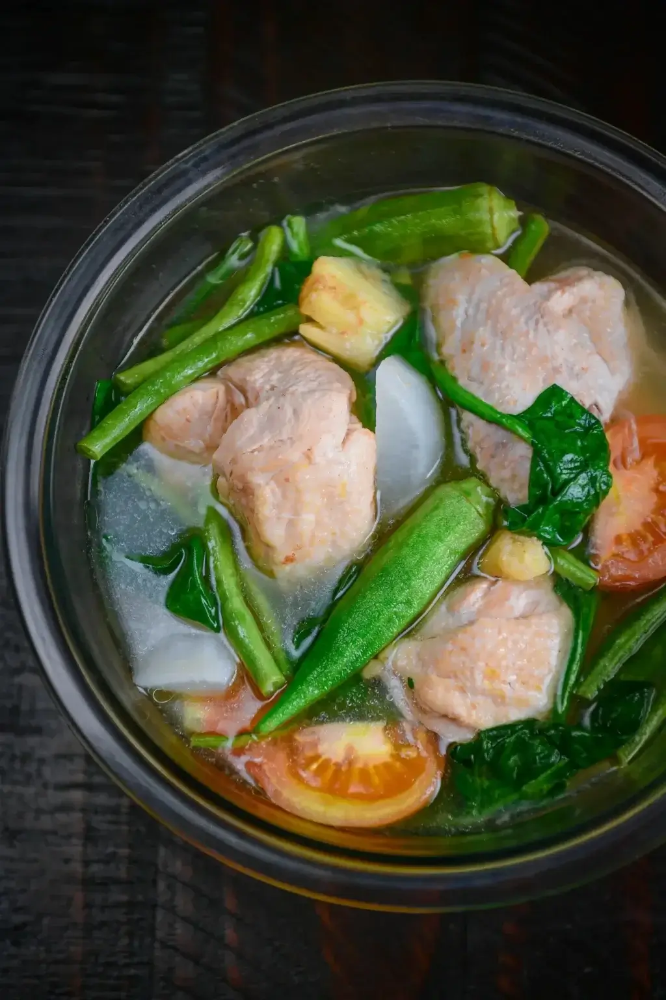

Sinigang Na Manok Recipe

Description
A classic filipino dish that's sweet and sour.
Ingredients
- 1-2 Garlic cloves
- 1 Onion
- 0.5-1 Kg of chicken meat
- Water
- A cube of chicken stock
- 2 tomatoes
- 2-3 green pepper
- Pepper
- 1/2-1 Lemon
- 150-250 Mg of spinach
- Cooking oil
- Salt
Steps
- Heat the cooking oil in a pot and saute the tomatoes, onion, and garlic.
- Season the tomatoes, onion, and garlic with salt.
- Once the onion softens, add the chicken meat and cook it for a few minutes (remember to flip it if it can be
flipped).
- Season the chicken with pepper (white or black) and let it cook for some more.
- Once the juices of the tomatoe surrounds the chicken, add water until everything is covered. Bring it to a
boil.
- Add the cube of chicken stock while it's in the process of getting to a boil and stir.
- Once it's boiling, lower the heat and let it simmer for at least 30 minutes to 1 hour. Remember to stir the
pot.
- While it's simmering, season to taste.
- Add around 1/2 of a squeezed lemon to the pot, stir and season to taste.
- After about an additional 5-15 minutes, add 150-250 mg of spinach and stir the pot. Cook the spinach for an
additional 1-5 minutes
- Transfer to a serving plate and serve with rice.
Home